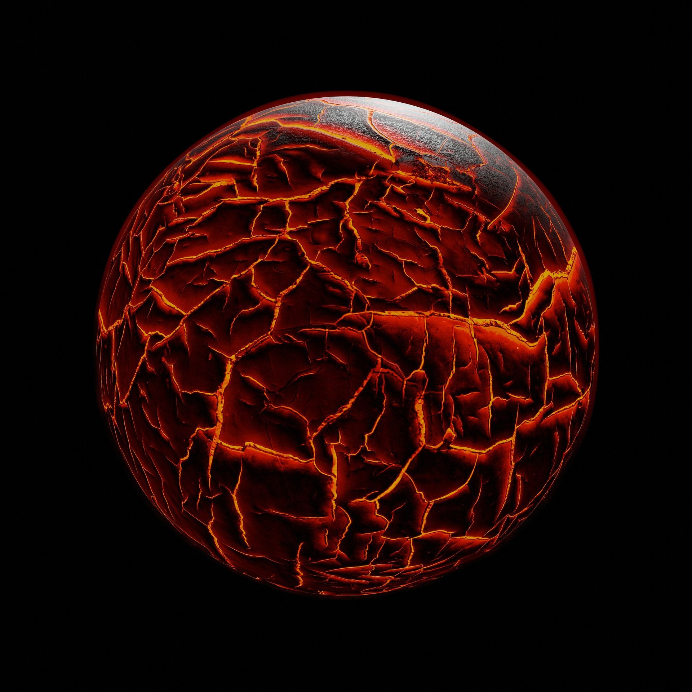
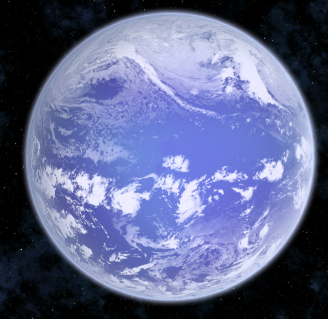
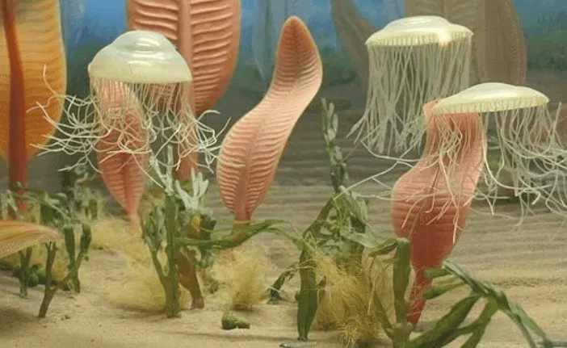
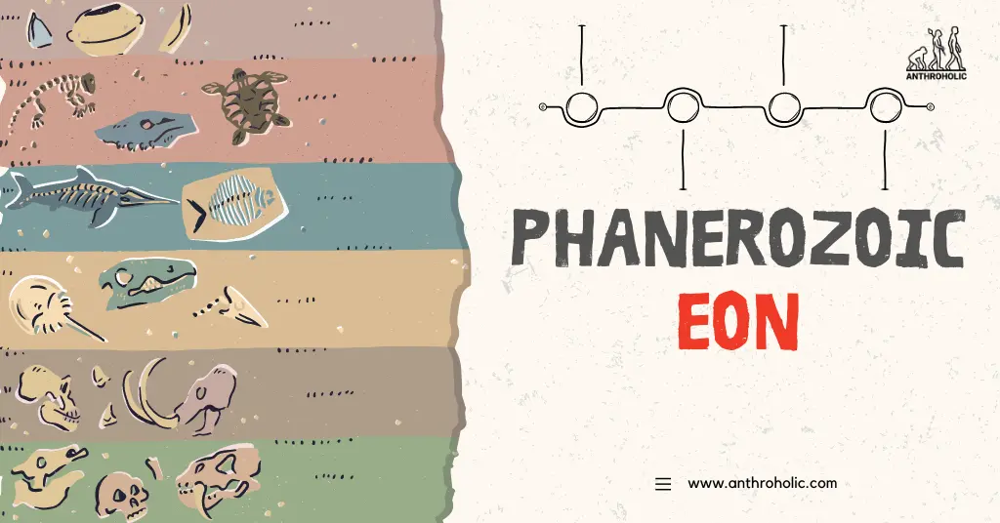
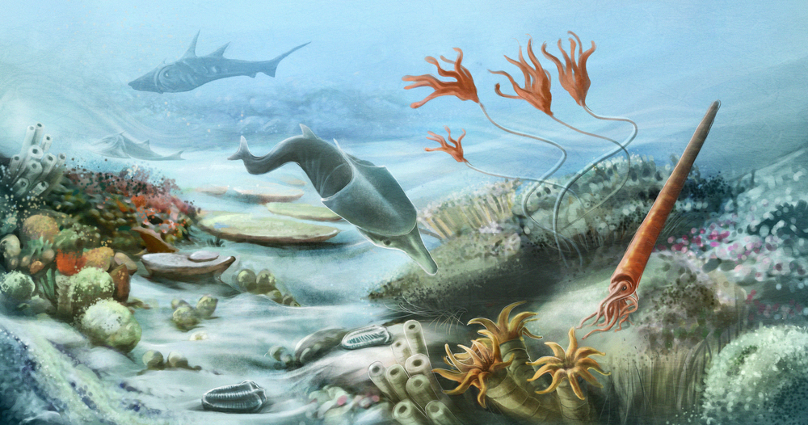
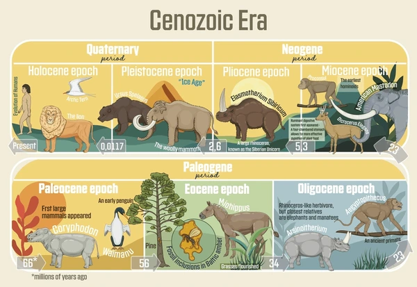
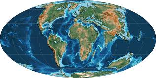
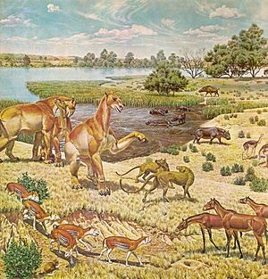
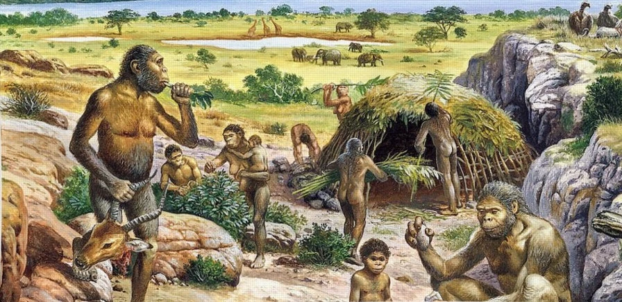

Around 4.6 billion years ago, Earth formed from the dust and gas surrounding the young Sun. At this early stage, the planet was molten and frequently bombarded by asteroids and comets. A solid crust gradually formed, oceans began to appear, and the first atmosphere emerged.
Although hostile and unstable, this ancient Earth laid the foundation for the later emergence of life.
Hadean Eon

4.6–4.0 billion years ago. During the Hadean, Earth was mostly molten and frequently hit by asteroids and comets.
The first solid crust, oceans, and primitive atmosphere began to form.
Archean Eon

4.0–2.5 billion years ago. The first evidence of life appeared. Crust and early continents stabilized, and oceans covered much of the surface.
Proterozoic Eon

2.5–0.541 billion years ago. Oxygen accumulated in the atmosphere, supercontinents began to form, and complex life started to emerge.
Phanerozoic Eon

0.541 billion years ago to present. Life diversified dramatically, forming complex ecosystems in the oceans and on land.
Paleozoic Era

541–252 million years ago. Major periods: Cambrian, Ordovician, Silurian, Devonian, Carboniferous, Permian.
Mesozoic Era
252–66 million years ago. Major periods: Triassic, Jurassic, Cretaceous.
Cenozoic Era

66 million years ago to present. Major periods: Paleogene, Neogene, Quaternary.
Paleogene Epoch

Paleocene, Eocene, Oligocene.
Neogene Epoch

Miocene, Pliocene.
Quaternary Epoch

Pleistocene, Holocene, and the proposed Anthropocene.